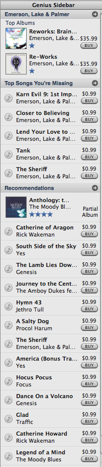

How smart *is* the Genius?
So how are the Genius recommendations and playlists? Well, there are some funny bits to start off with. For instance, if try to get recommendations based upon a Beatles song, the 'Genius' can't help you at all.
Instead, it just falls back on what's popular. It doesn't even try to match the Genre (britpop? 60s psychedelia) or artist (John Lennon, Wings?). Pink and Rihanna are right out. This glaring gap is not just confined to the Beatles, but it seems to occur for other artists like Bob Seger, and AC/DC that have shunned the iTunes store .
Similarly, for long tail artists, the Genius didn't have too much to say. For example, the Genius recognized artist DJ Markitos and was ready to sell me another DJ Markitos album, but couldn't offer me any other recommendations:

When I avoid the long tail, or the iTunes-averse artists, I can coax the Genius to give me some real recommendations. The first thing I notice is that the recommendations seem to be artist-based and not album or track-based. For instance if I select as a seed track Emerson Lake and Palmer's 'Food for your Soul' (which is a big band jazz-fusion track), I get recommendations for Yes, Jethro Tull, The Moody Blues, Procol Harem, and Renaissance. When I pick ELPs - Two Part Invention (Bach on a xylophone), I get the same recommendations for tracks by Yes, The Moody Blues, Procol Harem, Renaissace etc. And surprise, surprise, if I pick a progressive rock track by ELP I get recommendations for the same set of artists.

The same is true for the playlists generated by the Genius - the Genius just picks tracks from similar artists regardless of how well the track is representative for the artist. For instance, on the album 'Return to the center of the earth' by Rick Wakeman the tracks alternate between music and narration. If I use one of the narration tracks as a seed, the Genius gives me run of the mill tracks by progressive rock artists. No track-similarity is used to generate the playlists. This is not Pandora-like behavior.
So, the Genius isn't great with the long tail, and can't give you good recommendations based upon a track or an album. So, how does it do with regular old recommendations? Let's look at a few:
Seed song:: Dazed and Confused by Led Zeppelin.
Recommendations:: Spoon, RHCP, Pure Parie League,
Chuck Berry, System of a Down, Madonna, Linkin Park (the Chuck Berry
song was the Christmas ditty'Run Rudolph Run')
Comments:I think we are seeing some extreme popularity bias here. The artists just don't match.
My Score: D
Seed song:: My Name is Jonas by Weezer
Recommendations:: Audioslave, Death Cab For Cutie, blink-182, Tenacious D, Bright Eyes, Weezer, The Shins
Comments:No clunkers this time, but nothing new - no novelty or serendipity. I could get a much better list from All Music guide
My Score: C
Seed song:: Fanfare for the Common Man by Emerson Lake and Palmer
Recommendations:: Yes, Focus, Genesis, The Moody Blues, Procol Harum
Comments:All recommendations from the progressive
rock bands of the 70s. Again, no clunkers, but this list is not going to
help people find new music - no Gentle Giant, no Porcupine Tree or
Dream Theater. This is classic rock radio
My Score: C
Seed song:: Fidelity by Regina Spektor
Recommendations::
Ingrid Michaelson, Augustana, Lily Allen, Hellgoodbye, Mat Kearney, KT
Tunstall, Corinne Baily Rae, Blue October, OK Go, Death Cab for Cutie,
Gwen Stefani, Dashboard Confessional, Jason Mraz, John Mayer
Comments:Regina Spektor is a quirky indie
singer-songwriter. One of these recommendations seem good to me: Ingrid
Michaelson (hadn't heard of her, and she has that indie vibe), but the
rest are just bad, (the Gwen Stefani recommendation is downright
laughable). One good recommendation in ten - not too good
My Score: D
Seed song:: Money by Pink Floyd
Recommendations::
Eric Clapton, Jimi Hendrix, The Doors, Cream, ZZ Top, Pink Floyd, Deep
Purple, Alice Cooper, Blue Oyster Cult, The Rolling Stones, Steppenwolf
Comments:Another set of artists from the greatest hits of the 60s and 70s album. Yawn
My Score: D
I like to rate recommendations on 4 factors:
- Relevance - how well do the recommended items match the taste - the genius does OK here, with a few glaring errors like the Gwen Stefani recommendation for Regina Spektor.
- Novelty - how well does the recommender find items that I haven't heard of - the Genus doesn't fair well at all - when it did recommend items that I hadn't heard of, they were almost always irrelevant.
- Reach - how far does the recommender get into the long tail. The Genius couldn't give recommendations for the long tail items that I tried, nor did it give recommendations that were far into the tail (and I couldn't steer it to hipster items).
- Transparency - how well does the recommender explain the recommendations. A recommender like Pandora does a great job explaining why an item was recommended, however, the Genius doesn't even try to explain its recommendations.
The iTunes Genius is just a run-of-the-mill collaborative filtering recommender - the recommendations are nothing special - there's no advanced content analysis like you get from MusicIP. There's no deep analysis of content and context like The Echo Nest. There's no social community or tags like at Last.fm. There's no transparency in the recommendations like at Pandora. - the Genius just gives rather pedestrian recommendations and playlists.
Apple and iTunes are at a choke point in the music ecosystem - Apple has an opportunity to help people explore for and discovery new music. It is good to see Apple recognize this and at least start to provide recommendation tools. I hope they will start to look at all of the interesting work being done by researchers in the Recommenders and Music Information Retrieval community and try to make their Genius a little smarter.

{kind=link}
Nice summary Paul. I agree that they could be doing so much more with track-level detail.
From what I can determine/imagine, the "Genius Processing" sends the metadata from your ITL (iTunes Library) file up to Apple Skynet and they make massive Collaborative Filtering comparisons based on the available tag data (usually Album, Artist, Track Title and Genre).
They then create similarity lists for each song based on the global catalog (maybe bumping up ranking points for top ratings or play counts), filter by Genre (so you're *less* likely to get James Brown and Coldplay next to each other) and then send down your static lists, ready for you to call up on request.
They're doing some interesting stuff regarding what we call "Pruning" (making sure that no one artist totally dominates the list and making it less likely that two songs by the same artist get played back to back). And the "Top Songs You're Missing" recommendations are pretty interesting in that they recommend songs by the artist that you may not have in your collection yet. I would see value in another Recommendation level that is more specific than "Top Songs In X Genre."
Looking at a playlist from Simon & Garfunkel's "The Only Living Boy in New York" gets interesting since it is really a quiet folk-pop song, but also appeared on the "Alternative" soundtrack for 'Garden State'...the playlist is an interesting mix of alt-rock like The La's and the Shins, but also The Stones and the Beach Boys.
The fascinating thing is that it picked "Wild Horses" by the Stones and "God Only Knows" by the Beach Boys -- Two very quiet, slow, "Searching" and "Poignant" songs. Why didn't it grab "Satisfaction" or "California Girls"? Is there some element of Machine Listening or tempo/BPM analysis going on? Thoughts?
I had another quiet '70s rock playlist that had "Beth" by Kiss in there. Not any of the kick-arse heavy rock songs by Kiss, just the AOR ballad. How did that stumble in there?
I have to say that I don't give it the close-to-failing grade that you do. It ain't all the way there, but it's a good first step. It may get better as more of us upload our collections. (Then again, it might get diluted as non-early adopters dump their lousy music into the soup).
Posted by Zac on September 10, 2008 at 09:58 AM EDT #
Thanks Zac
> Is there some element of Machine Listening or tempo/BPM analysis going on? Thoughts?
I don't think so. When I use an atypical track from an artist as the seed (as with the ELP examples), I get tracks from similar artists - the tracks don't match at all.
I'm sure the Genius will increase iTunes sales quite a bit - so from that point of view, I think the Genius will be a success. However as a tool that will help my discover new music, the Genius is not the replacement for Pandora or Last.fm (as the mainstream media has been suggesting). The recommendations lack the novelty, relevance, serendipity, steerability and reach needed to be useful to help me find new music.
This morning the iTunes Genius suggested that since I like Led Zeppelin's Stairway to Heaven that I should buy "Love will keep us together" - by "The Captain and Tennille". It is recommendations like this that make me wonder what is going on under the Genius hood.
Posted by Paul on September 10, 2008 at 10:23 AM EDT #
I didn't had time to check it so thanks for what is probably the best dans deeper analysis if genius.
Posted by leafar on September 10, 2008 at 10:49 AM EDT #
Well i found it rather interesting that it had no recommendations for not so major music. I tried it out with different drum'n bass songs (Swing Time by Hidden Agenda and Heckler&Koch by A Guy Called Gerald) and i wouldnt create a playlist at all.
Now it seems strange why ndexing of the music collection takes so long (1 hour for 8000 songs on my side) if it doesnt do any analysis kind of thing.
Posted by Petar on September 10, 2008 at 01:15 PM EDT #
Paul:
This morning the iTunes Genius suggested that since I like Led Zeppelin's Stairway to Heaven that I should buy "Love will keep us together" - by "The Captain and Tennille". It is recommendations like this that make me wonder what is going on under the Genius hood.
Me:
Simple, its using Cuil as a backend. :)
I strongly agree with your comments about Apple/itunes being a choke point to innovation. With the slow proliferation of streaming devices I've tried to interest a number of friends to look at them, but the best candidates are always locked into itunes drm.
Given Pandora's problems, what I would really like to see is a recommendation engine that focuses on cc/free music as a way to introduce people like me to newer bands that aren't encumbered by record company contracts.
Posted by sander on September 12, 2008 at 08:49 AM EDT #
Saw this link on Wired on how to make Genius better:
http://howto.wired.com/wiki/Get_Better_Genius_Recommendations_in_iTunes
Personally, that much needed effort signals a problem to me.
Posted by Jeremy on September 16, 2008 at 08:50 AM EDT #
I tend to agree with Zak, I have found that the genius tends to pick songs of a similar feel, at least for the more popular artists.
It will be interesting to see how if it changes/improves when more users info gets into the cloud.
Posted by jhrfc on September 16, 2008 at 11:11 AM EDT #